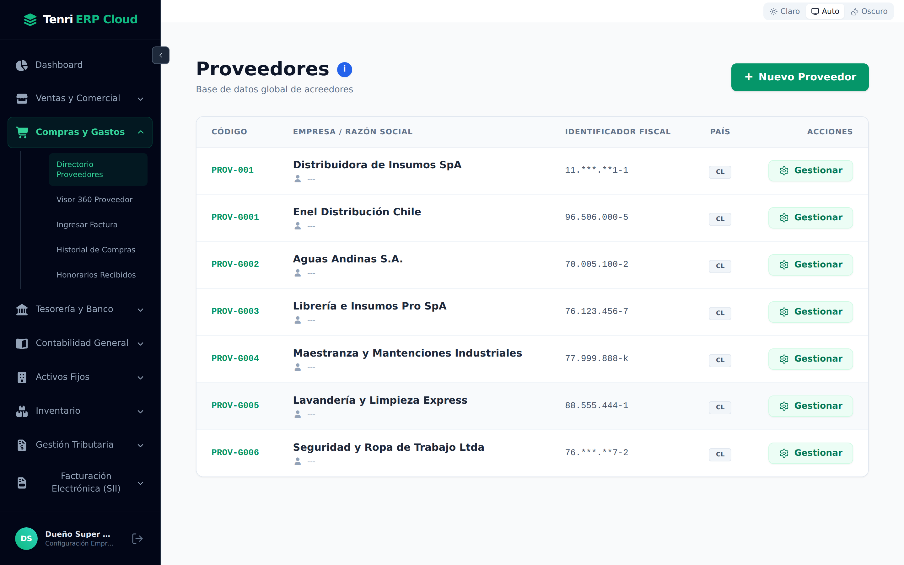
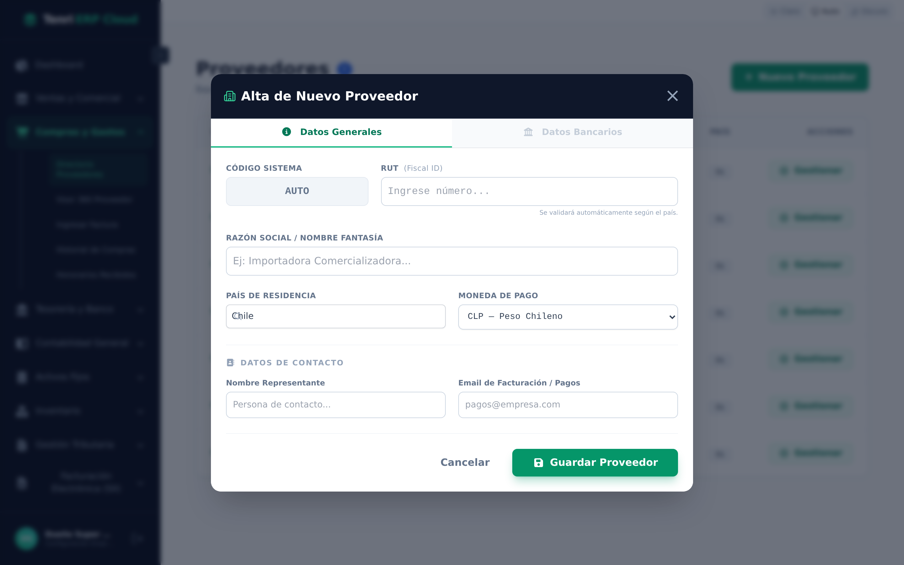
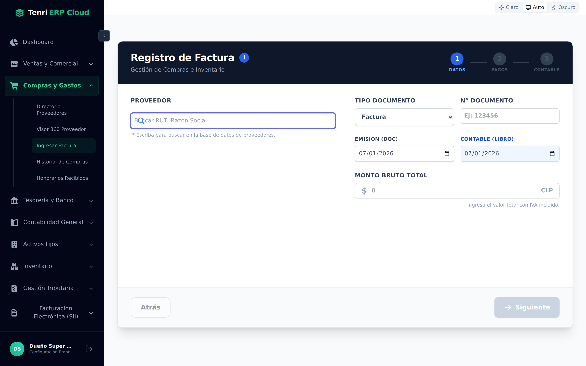
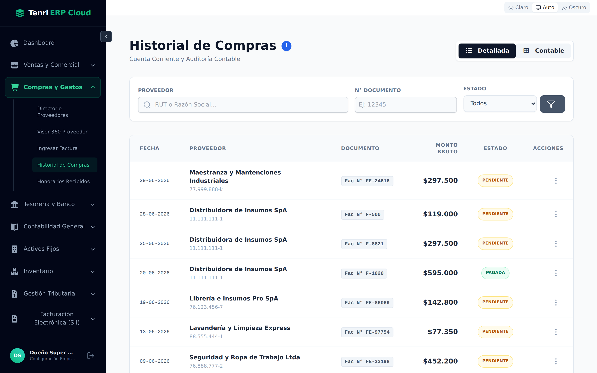

Mantenga su base de proveedores, registre sus facturas de compra en pocos pasos y controle qué está pendiente y qué ya se pagó.

Todo lo relacionado con sus proveedores y compras.
Al abrir Compras y Gastos en la barra lateral, encontrará:
Es la base de datos global de acreedores. Cada fila muestra el código, la razón social, el identificador fiscal y el país, con el botón Gestionar para ver o editar el proveedor.
Presione + Nuevo Proveedor. La ficha tiene dos pestañas:
| Pestaña | Contenido |
|---|---|
| Datos Generales | Código (automático), RUT (se valida según el país), razón social, país de residencia, moneda de pago y datos de contacto (representante y email de pagos). |
| Datos Bancarios | Cuenta bancaria del proveedor para realizar los pagos. |
Complete la información y presione Guardar Proveedor.

Un asistente guiado en tres pasos.
El registro de una factura se hace en tres etapas, indicadas en la parte superior:

Reúne todas las facturas registradas (Cuenta Corriente y Auditoría Contable). Puede alternar entre la vista Detallada y la Contable, y filtrar por proveedor, número de documento y estado.

Desde el menú de acciones (⋮) de cada factura puede registrar el pago, ver el detalle o anularla. Al registrar el pago, la factura pasa de Pendiente a Pagada.
Si recibe boletas de honorarios de profesionales independientes, regístrelas en Honorarios Recibidos: el sistema calcula la retención y deja los datos listos para su Declaración Jurada 1879.
Compras y Gastos centraliza a sus proveedores y sus facturas, y prepara la contabilidad del gasto de forma automática.
Base global de acreedores con datos generales y bancarios.
Datos, pagos y contabilización; el IVA y el asiento se generan solos.
Historial con filtros y estados: sepa qué está pendiente y qué ya se pagó.